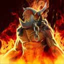

"UNA OBRA MAESTRA DE LOS MULTIJUGADORES MODERNOS"

Dota 2 es un videojuego perteneciente al género de Arena de batalla en línea ARTS («estrategia de acción
en tiempo real»), también conocido como MOBA, lanzado el 9 de julio del año 2013. El juego fue
desarrollado por la empresa Valve Corporation. El título fue anunciado oficialmente el 13 de octubre de
2010, en un artículo en el sitio web Game Informer; posteriormente, entró en su etapa Beta a principios
del 2011, y finalmente se lanzó al público en general a través de Steam el 9 de julio de 2013 para
Microsoft Windows, y el 18 de julio de 2013 para OS X y Linux, el 17 de junio de 2015 Valve lanzó la
beta del juego usando el nuevo motor gráfico Source 2 [Dota 2 Reborn], cliente que será el único y
definitivo poco después del The International 2015 según el anuncio se mantuvo fiel a su predecesor, a
la vez que incrementó la calidad del producto final, además de ofrecer una experiencia envolvente y
gratificante para los jugadores. Sin embargo, Dota 2 es actualmente criticado por tener una dura curva
de aprendizaje y una comunidad de las más hostiles en el ámbito de internet. Actualmente es el juego más
jugado de Steam con más de 40.6 millones de jugadores únicos que se conectan casi en su totalidad con
frecuencia diaria y ha llegado a ser incluido en el Guinness World Records Gamer's Edition.
Cada día, millones de jugadores de todo el mundo entran en batalla como uno de los más de cien héroes de Dota en un enfrentamiento por equipos de 5 contra 5. Dota es el juego de estrategia en tiempo real de acción multijugador más profundo jamás creado y siempre hay una nueva estrategia o táctica que descubrir. Jugar a Dota es gratis y siempre lo será. Comienza ya a defender tu Ancestro.
ELIGE A TU HEROE

Estrategas de la magia, feroces bestias, astutos pícaros... El conjunto de héroes de Dota 2 es enorme y de una diversidad ilimitada. Lanza increíbles hechizos y devastadoras habilidades definitivas en tu camino hacia la victoria.
Fuerza
 Dragon Knight
Dragon Knight
 Earth Spirit
Earth Spirit
 Lycan
Lycan
 Spirit Breaker
Spirit Breaker
 Pudge
Pudge
Agilidad
 Anti-Mage
Anti-Mage
 Shadow Fiend
Troll Warlord
Shadow Fiend
Troll Warlord
 Ember Spirit
Ember Spirit
 Faceless Void
Faceless Void
Inteligencia
Rubick Warlock Invoker
Invoker
 Storm Spirit
Necrophos
Storm Spirit
Necrophos
Top 10 héroes más usados en competitivo:
- Rubick
- Anti-Mage
- Earth Spirit
- Shadow Fiend
- Invoker
- Chen
- Dark Seer
- Natures Prophet
- Batrider
- Io